E. AANWIJZINGSTEKENS
Opmerking
Deze tekens kunnen worden aangevuld of verduidelijkt met bijkomende tekens, vermeld onder F
E.1 | In-, uit- of doorvaren toegestaan (algemeen teken) (artikelen 6.08, onder b, 6.16, lid 10, onder a, 6.26, leden 4 en 6, 6.27, lid 2, 6.28a) | 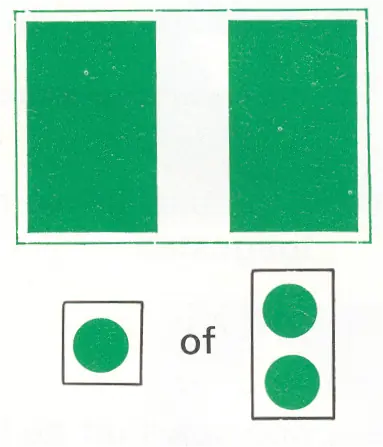 | |
E.2 | Hoogspanningslijn | 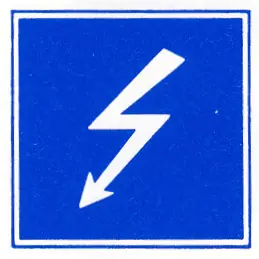 | |
E.3 | Stuw | 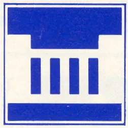 | |
E.4a | Niet-vrijvarende veerpont | 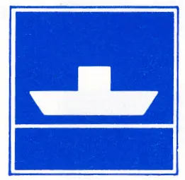 | |
E.4b | Vrijvarende veerpont | 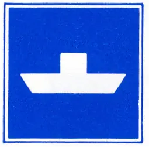 | |
E.5 | Toestemming ligplaats te nemen (ankeren en meren) aan de zijde van de vaarweg waar het bord is geplaatst (artikelen 7.02, lid 2, 7.05, lid 1) | 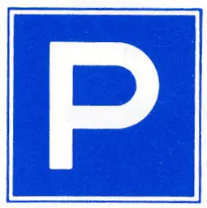 | |
E.5.1 | Toestemming ligplaats te nemen (ankeren en meren) tot ten hoogste de aangegeven breedte, in meters gerekend vanaf het bord (artikel 7.05, lid 2) | 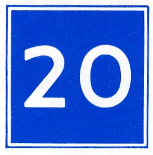 | |
E.5.2 | Toestemming ligplaats te nemen (ankeren en meren) op het gedeelte van de vaarweg, gelegen tussen de aangegeven afstanden, in meters gerekend vanaf het bord (artikel 7.05, lid 3) | 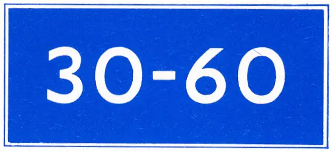 | |
E.5.3 | Toestemming ligplaats te nemen (ankeren en meren) met ten hoogste het aangegeven aantal schepen langszijde van elkaar, aan de zijde van de vaarweg waar het bord is geplaatst (artikel 7.05, lid 4) | 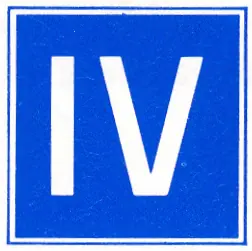 | |
E.5.4 | Toestemming ligplaats te nemen (ankeren en meren) uitsluitend voor duwvaart die geen blauwe kegels of lichten behoeft te voeren, aan de zijde van de vaarweg waar het bord is geplaatst (artikel 7.06, lid 1) | 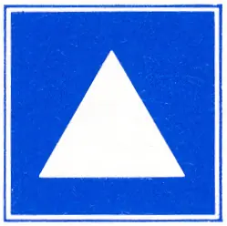 | |
E.5.5 | Toestemming ligplaats te nemen (ankeren en meren) uitsluitend voor duwvaart die één blauwe kegel of één blauw licht moet voeren, aan de zijde van de vaarweg waar het bord is geplaatst (artikel 7.06, lid 1) | 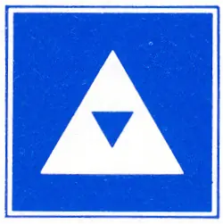 | |
E.5.6 | Toestemming ligplaats te nemen (ankeren en meren) uitsluitend voor duwvaart die twee blauwe kegels of twee blauwe lichten moet voeren, aan de zijde van de vaarweg waar het bord is geplaatst (artikel 7.06, lid 1) | 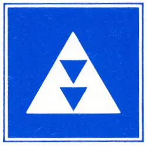 | |
E.5.7 | Toestemming ligplaats te nemen (ankeren en meren) uitsluitend voor duwvaart die drie blauwe kegels of drie blauwe lichten moet voeren aan de zijde van de vaarweg, waar het bord is geplaatst (artikel 7.06, lid 1) | 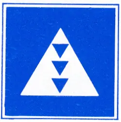 | |
E.5.8 | Toestemming ligplaats te nemen (ankeren en meren) uitsluitend voor andere schepen dan duwvaart die geen blauwe kegels of lichten behoeven te voeren, aan de zijde van de vaarweg waar het bord is geplaatst (artikel 7.06, lid 1) | 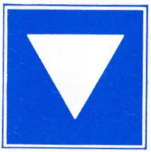 | |
E.5.9 | Toestemming ligplaats te nemen (ankeren en meren) uitsluitend voor andere schepen dan duwvaart die één blauwe kegel of één blauw licht moeten voeren, aan de zijde van de vaarweg waar het bord is geplaatst (artikel 7.06, lid 1) | 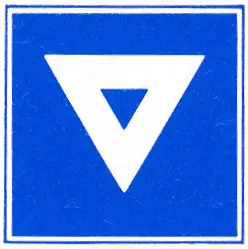 | |
E.5.10 | Toestemming ligplaats te nemen (ankeren en meren) uitsluitend voor andere schepen dan duwvaart die twee blauwe kegels of twee blauwe lichten moeten voeren, aan de zijde van de vaarweg waar het bord is geplaatst (artikel 7.06, lid 1) | 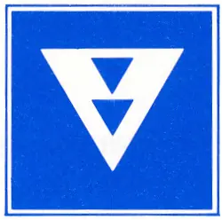 | |
E.5.11 | Toestemming ligplaats te nemen (ankeren en meren) uitsluitend voor andere schepen dan duwvaart die drie blauwe kegels of drie blauwe lichten moeten voeren, aan de zijde van de vaarweg waar het bord is geplaatst (artikel 7.06, lid 1) | 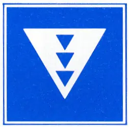 | |
E.5.12 | Toestemming ligplaats te nemen (ankeren en meren) uitsluitend voor schepen - zowel duwvaart als andere schepen dan duwvaart - die geen blauwe kegels of lichten behoeven te voeren, aan de zijde van de vaarweg waar het bord is geplaatst (artikel 7.06, lid 1) | 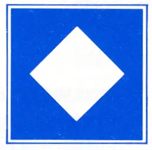 | |
E.5.13 | Toestemming ligplaats te nemen (ankeren en meren) uitsluitend voor schepen - zowel duwvaart als andere schepen dan duwvaart - die één blauwe kegel of één blauw licht moeten voeren, aan de zijde van de vaarweg waar het bord is geplaatst (artikel 7.06, lid 1) | 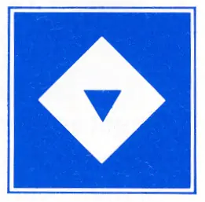 | |
E.5.14 | Toestemming om ligplaats te nemen (ankeren en meren) uitsluitend voor schepen - zowel duwvaart als andere schepen dan duwvaart - die twee blauwe kegels of twee blauwe lichten moeten voeren, aan de zijde van de vaarweg waar het bord is geplaatst (artikel 7.06, lid 1) | 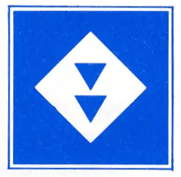 | |
E.5.15 | Toestemming ligplaats te nemen (ankeren en meren) uitsluitend voor schepen - zowel duwvaart als andere schepen dan duwvaart - die drie blauwe kegels of drie blauwe lichten moeten voeren, aan de zijde van de vaarweg waar het bord is geplaatst (artikel 7.06, lid 1) | 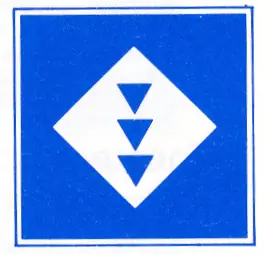 | |
E.6 | Toestemming te ankeren aan de zijde van de vaarweg waar het bord is geplaatst (artikel 7.03, lid 2) | 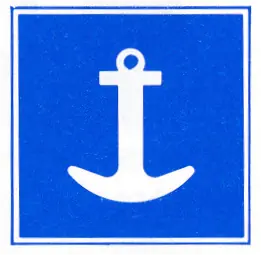 | |
E.6.1 | Toestemming gebruik te maken van spudpalen aan de zijde van de vaarweg waar het bord is geplaatst (artikel 7.03, lid 3) | ||
E.7 | Toestemming te meren aan de zijde van de vaarweg waar het bord is geplaatst (artikel 7.04, lid 2) | ||
E.7.1 | Toestemming te meren voor het onmiddellijk van of aan boord zetten van een auto | 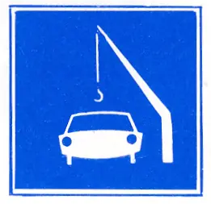 | |
E.8 | Plaats om te keren (artikelen 6.13, lid 7, 7.02, lid 1, onder i) | 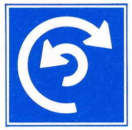 | |
E.9 | a | Het gevolgde vaarwater geldt als hoofdvaarwater ten opzichte van het vaarwater dat daarin uitmondt (geen verwijzing) | 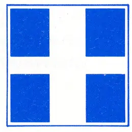 |
b | idem | 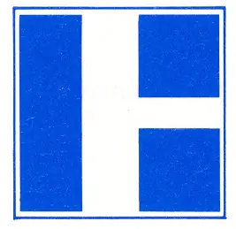 | |
c | idem | 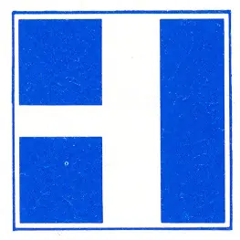 | |
d | idem | ||
e | idem | 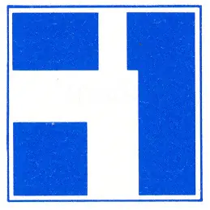 | |
f | idem | ||
g | idem | ||
h | idem | 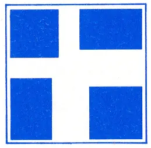 | |
i | idem | 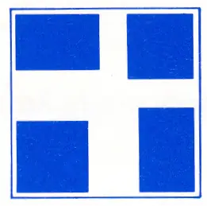 | |
E.10 | a | Het gevolgde vaarwater geldt als nevenvaarwater ten opzichte van het vaarwater waarin het uitmondt (geen verwijzing) | 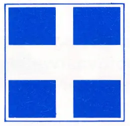 |
b | idem | 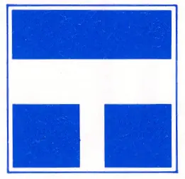 | |
c | idem | 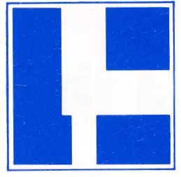 | |
d | idem | 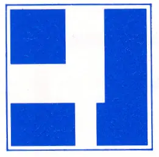 | |
e | idem | 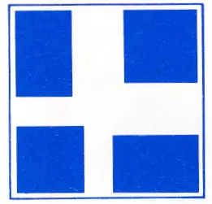 | |
f | idem | 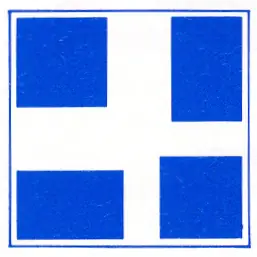 | |
E.11 | Einde van een verbod of een gebod geldend voor één richting of einde van een beperking | 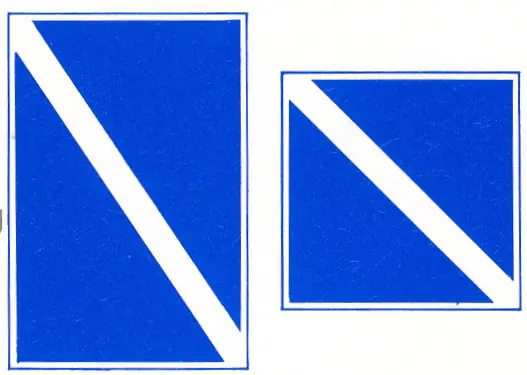 | |
E.12 | a | Voorwaarschuwing. vaste lichten: moeilijkheden vooruit, stoppen indien de voorschriften zulks vereisen. | 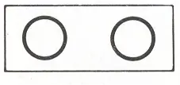 |
b | synchroon brandende isofase lichten: u kunt voorzichtig naderen | 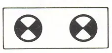 | |
E.12.1 | Waarschuwing voor uitvarende of langsvarende schepen flikkerlicht | 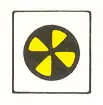 | |
E.13 | Drinkwater voor schepen | 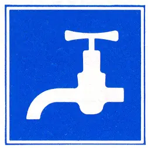 | |
E.14 | Telefoon | ||
E.15 | Motorschepen toegestaan | 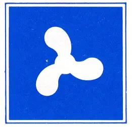 | |
E.16 | Kleine schepen toegestaan | ||
E.17 | Waterskiën toegestaan | 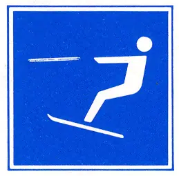 | |
E.18 | Zeilschepen toegestaan | 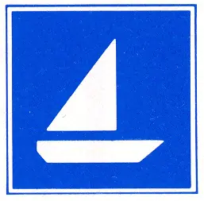 | |
E.19 | Door spierkracht voortbewogen schepen toegestaan | 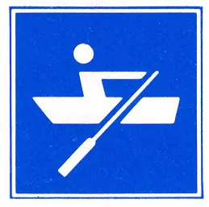 | |
E.20 | Zeilplanken toegestaan | 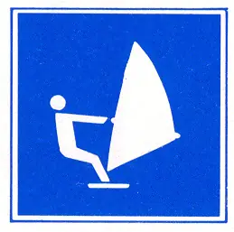 | |
E.21 | Snel varen voor kleine motorschepen toegestaan | 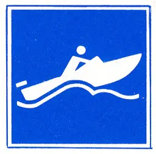 | |
E.22 | Toegestaan schepen te water te laten (trailerhelling) | 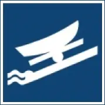 | |
E.23 | Marifoonkanaal voor nautische informatie, bijvoorbeeld: kanaal 18. | 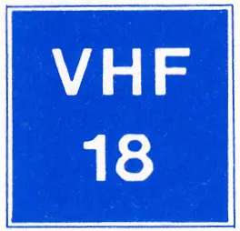 | |
E.24 | Waterscooters toegestaan | 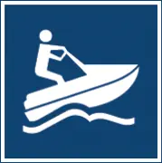 | |
E.25 | Aansluiting voor walstroom beschikbaar |